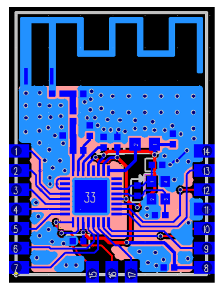

ING02-03 ING02-03 模块是用 ING9188X 设计的一款 低功耗蓝牙模块，支持 MESH,可以输出 5 路 PWM，1 路 UARAT,1 路 I2C，印制板天 线。ING9188X 采用 40nm 工艺， 集成 32bit ARM M3 处理器，512KB flash，128KB ARM，10 个 GPIO,完全兼容 BLE5.0，以及全部 BLE5.1，并提供多种应用示例。  Github 获取 用户手册。 获取 电路原理图。 Github Mirror 获取 用户手册。 获取 电路原理图。 查看其它设计： ING02-03 ING04-01-05